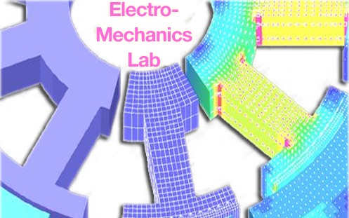

Daniel Talancon
« Back to listings
INSTAR: Flywheel energy storage system
Open Undergraduate Research paid paid credit design neurology hardware wearables Jacobs Institute product manufacture market analysis Sponsored by| Posted: | 05/03/2014 | |
| Description: |
INSTAR is designing and manufacturing a high-power, cost-effective flywheel energy storage system for improving electric and hybrid vehicle system efficiency. The system is an innovative, low-cost triple-hybrid (gasoline engine, electric motor, and mechanical flywheel) that will have improved regenerative energy storage and acceleration when compared to traditional hybrids which employ only batteries in energy storage. INSTAR employs a flywheel kinetic energy recovery system (KERS) to temporarily store the excess regenerative braking energy normally lost as heat. This energy is then sent either directly to the drive motor for acceleration or to the batteries at a rate they can accept. |
|
| Categories: | Business, Mechanical Engineering, Berkeley Institute of Design, Jacobs Institute | |
| Research Basis |
One potential feature of hybrids, regenerative braking, the ability to recoup energy from deceleration, has thus far been relatively unsuccessful. This is due to the modern battery’s lack of power density; batteries are not capable of being charged as quickly as kinetic energy is dissipated by rapid braking. The widespread adoption of hybrid and fully-electric vehicles is key to our transition away from fossil fuel dependence. However, this transition has been slow – the relatively limited fuel efficiency gains have not justified the increased costs. While regenerative braking certainly improves overall vehicle efficiency, the charging rates of current chemical batteries limit the amount of energy recovered. The concept of INSTAR is to increase the efficiency of regenerative braking by increasing the power density of the hybrid system through the use of a flywheel as a “mechanical battery”. Flywheels are capable of much faster charge/discharge rates, and thus would be capable of filling in the areas where batteries fall short by providing high power density and efficiency for regenerative breaking and acceleration. Although flywheel energy storage systems have been researched for many years, there is still a need for the development of cost-effective, reliable systems. INSTAR seeks to develop an innovative, low-cost triple-hybrid (gasoline engine, electric motor, and mechanical flywheel) system that will have improved regenerative energy storage and acceleration when compared to traditional hybrids which employ only batteries in energy storage. INSTAR employs a flywheel kinetic energy recovery system (KERS) to temporarily store the excess regenerative braking energy normally lost as heat. This energy is then sent either directly to the drive motor for acceleration or to the batteries at a rate they can accept. |
|
| Website | Homepage | |
| About Lab | The UC Berkeley Department of Mechanical Engineering (ME) has a legacy of involvement in automotive engineering, making important contributions to research in combustion, automated vehicle control, use of composite materials, vehicle dynamics, and manufacturing methods. Although the ME department does not currently play a large role in hybrid electric vehicle research, the department is well suited to enter this field, having on its faculty (and including Electrical Engineering) expertise in electric motor design, internal combustion engines, mechanical design, composite materials, controls, power electronics, and sustainable manufacturing. Both from a faculty research prospective, as well as the ME department’s mandate to educate the next generation of mechanical engineers, it would be very beneficial for the department to develop a presence in this technology space. | |
| Lab Website |
Homepage | |
| About Professor |
Dennis K. Lieu, MA Bio |
|
| Roles |
Business Development Analyst Industrial Designer Machinist |
|
| Stage of Development | Mature Research | |
| Desired skills: |
Product Design Product Development Market Research Application Analysis and Development Business Model Development Machining |
|
Earliest start date: |
August 2014 |
|
| Latest start date (work must start by): | September 2014 | |
| Position end date: | December, 2014 -OR- June, 2015 | |
| Form of Compensation: | Class Units | |
| Number of positions: | 4 | |
| Listing Status: | Open | |
{kind=link}
{kind=link}
{kind=link}
{kind=link}
{kind=link}
{kind=link}
Discussion
« Back to listings